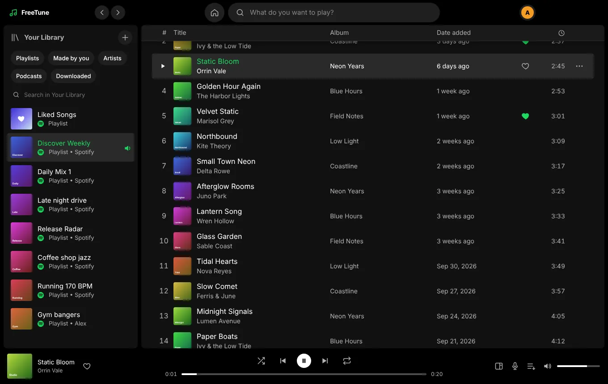
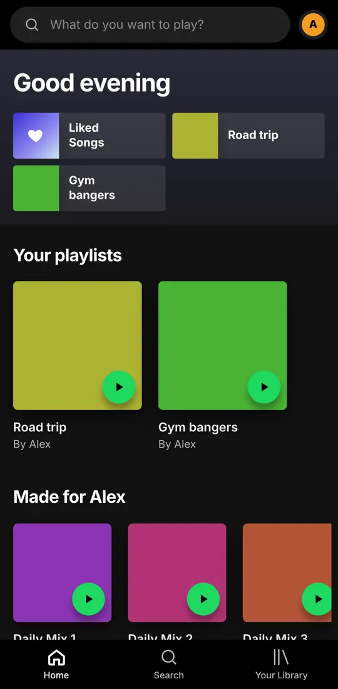
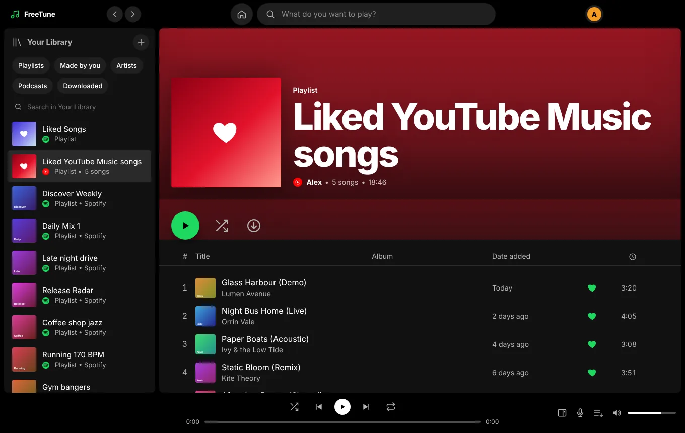
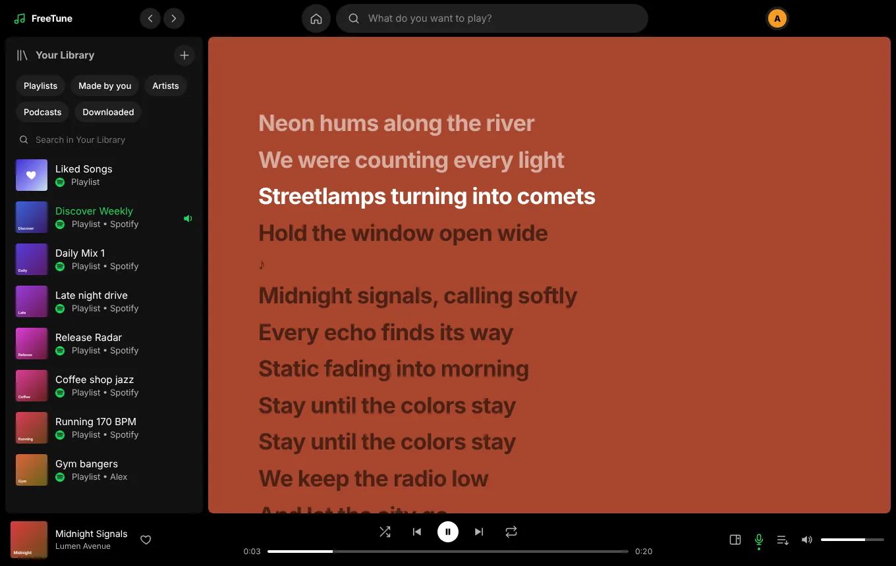

New in 1.12 Put any YouTube song in your Spotify playlists
FreeTuneNo ads.
Your Spotify playlists, Liked Songs and podcasts, played with no ads from YouTube Music. Plus every song YouTube Music has, and downloads for when you're offline.
Free. Windows 10 and 11, Android 8 and newer, iPhone with iOS 16 and newer. A free Spotify account works.


No ads✦Your Spotify library✦Every song on YouTube Music✦Offline downloads✦Synced lyrics✦Private podcasts✦No ads✦Your Spotify library✦Every song on YouTube Music✦Offline downloads✦Synced lyrics✦Private podcasts✦
FREETUNE
Everything you've saved on Spotify. None of the ads.
Sign in with Spotify once. FreeTune shows your home page, playlists and Liked Songs, then plays each song from YouTube Music, so there's nothing to skip between tracks.
Your whole library
Playlists, Liked Songs, followed artists and Spotify's recommendations, with search across all of Spotify.
All of YouTube Music too
Songs, remixes and live versions Spotify doesn't have show up in search, on artist pages and in saved YouTube Music playlists.
Downloads
Tap download on a playlist, album or Liked Songs. New songs added later download on their own.
Add songs by link
Paste a YouTube link into any of your playlists or Liked Songs. It stays in FreeTune; Spotify is never told.
Podcasts, privately
Episodes play from the show's public feed, not Spotify, and remember where you stopped.
Synced lyrics
Lyrics follow the song line by line. Click any line to jump to it.
LIKED SONGS
Like anything, from anywhere.
Hearts work on Spotify songs and YouTube Music songs alike. YouTube likes are kept on your device and mixed into Liked Songs by date.
Spotify likes sync with your account as usual
YouTube likes never leave your device
Shuffle, play and download them together

LYRICS
Sing along without a second app.
Press L or the microphone button. Synced lyrics come from LRCLIB, KuGou and YouTube Music, in that order.

ANDROID
Keeps playing with the screen off.
The next two songs are loaded before the current one ends, so tracks change without a gap, even with your phone in your pocket.
No ads, no Google account, no trackers, no Shorts and no autoplay rabbit holes. Bring your subscriptions once and FreeReel checks each channel's public feed for you.
Extract the zip to a folder you'll keep, then double-click Install FreeReel.bat.
If Windows says it protected your PC, click More info, then Run anyway.
Optional: bring your subscriptions from Google Takeout on the Home page.
The Windows setup downloads about 250 MB the first time (Electron and the playback engine). Nothing is installed outside the app's own folder until you run the installer it builds.
UPDATES
Recent versions
Already installed? Save the update file into your Downloads folder and the app offers to restart into the new version. Your settings, likes and downloads are kept.
1.12.1
Like any YouTube song by pasting its link in Liked Songs.
1.12.0
YouTube songs in your Spotify playlists, kept on your device.
1.11.0
Add songs to playlists from a YouTube link.
1.10.1
Liked YouTube Music songs, and the real app logos.
1.10.0
Full discographies, YouTube Music search and playlists.
1.9.1
Gapless playback that keeps going with the phone locked.
1.9.0
Downloads, and a faster app that opens straight to your home page.
FreeReel 1.8.2
Videos that YouTube holds back now start on their own when ready.
FAQ
Questions
Do I need Spotify Premium?
No. A free Spotify account works. FreeTune only reads your library and search from Spotify; the music itself comes from YouTube Music, so there are no Spotify ads.
What does Spotify or Google see?
Spotify sees that you signed in and browsed your library, like it would in its own app. Songs are fetched from YouTube without a Google account or cookies. Likes and songs you add from YouTube links stay on your device. Podcast episodes come from the show's public feed. YouTube still sees your internet address when it sends audio or video; use a VPN if you want to hide that.
Why does Windows warn me when I install?
The apps aren't code-signed, which costs money every year. Windows shows "Windows protected your PC" for unsigned apps. Click More info, then Run anyway.
A song plays the wrong version. Can I fix it?
Yes. Right-click the song, choose "Wrong song?", and paste the YouTube link of the right one. FreeTune uses it from then on.
Songs stopped playing. What now?
Open Settings and choose Update playback engine. If that doesn't help, Settings → Open log folder has a log you can share.
How do I install it on iPhone?
The iPhone app isn't on the App Store, so it's installed with Sideloadly (on a PC or Mac) or AltStore using your own Apple ID. With a free Apple ID the app has to be re-installed every 7 days; AltStore can do that for you automatically. It needs iOS 16 or newer.
Is this allowed?
FreeTune and FreeReel use unofficial Spotify and YouTube interfaces, which neither service permits. They can break when those services change. The risk to your accounts is low but not zero. Neither app is made by, or connected to, Spotify, YouTube or Google.